How-To Geek
The Best Features of Vivaldi, a New Customizable Web Browser for Power Users
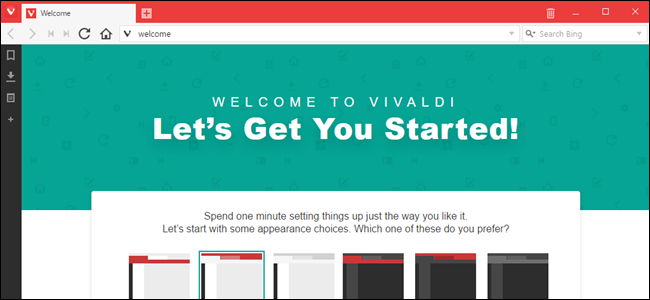
Vivaldi is a new desktop web browser for Windows, Mac, and Linux, built primarily for people who like to customize their browser to the nth degree. After over a year in development, it’s finally launched version 1.0–but is Vivaldi any better than the browsers you already use, and should you switch to it?
Vivaldi was created by Vivaldi Technologies, a company run by the ex-CEO of Opera, Jón S. von Tetzchner. Opera lost a lot of its popular features when Opera Software transitioned from the Presto layout engine to the Blink web engine in 2013. Vivaldi aims to bring back those popular Opera features and to introduce new, innovative features to Opera’s original base of users.
We installed Vivaldi and tested out some of the main features the company claims set the browser apart. Here’s how they stack up against the two other power user browsers, Chrome and Firefox.
Customize Your New Tab Page with Speed Dial
There are several features in Vivaldi that make your web browsing experience more efficient. The Speed Dial from Opera is included in Vivaldi, with some improvements. You can now collect your speed dial websites into named groups as well as change the background on the Speed Dial page.
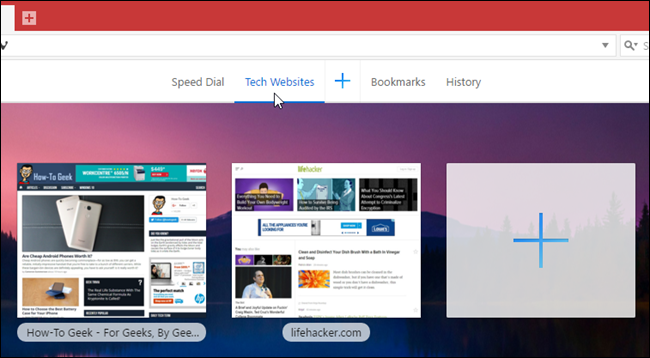
Firefox used to have a similar feature in the form of tiles on the New Tab page, but now you need to install an add-on, called New Tab Override, to get this capability. Chrome saves the last eight websites you visited as thumbnails on the New Tab page, but you can’t customize the page with your own websites, so it’s not quite the same thing. However, you can install an extension, such as New Tab Page, in Chrome to obtain functionality similar to Vivaldi’s built-in Speed Dial.
Search for Anything with Quick Commands
If you like keyboard shortcuts, you’ll like Vivaldi’s Quick Commands feature. It allows you to search for just about anything in open tabs, bookmarks, browsing history, and settings simply by pressing F2. The Quick Commands dialog box also shows you keyboard shortcuts for commands.
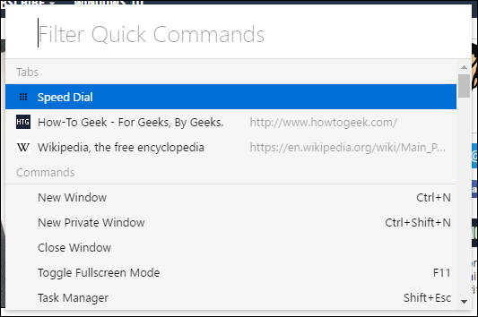
I did not find any feature equivalent to Vivaldi’s Quick Commands in Firefox or Chrome, nor did I find any add-ons or extensions that provide that kind of functionality.
Customize Your Bookmarks
What would a browser be without bookmarks? Vivaldi includes a Bookmarks panel, as well as a Bookmarks bar that can be activated in the settings (it does not display by default).
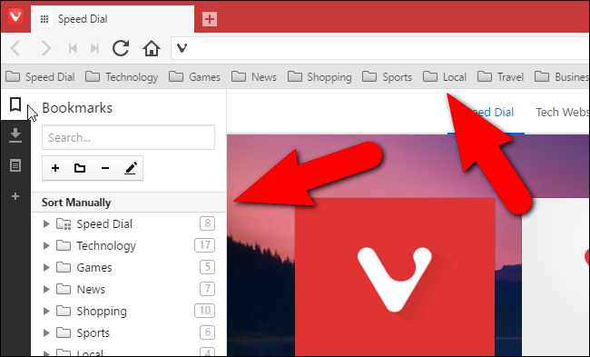
Vivaldi also provides a bookmark manager that allows you to easily add, delete, and organize bookmarks.
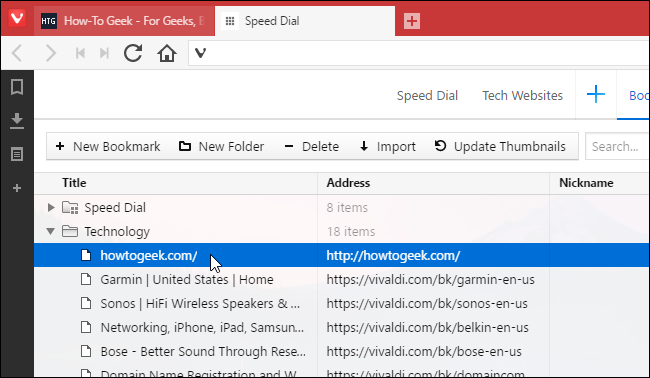
You can also import bookmarks from various other browsers, as well as bookmarks files. The options for what you can choose to import changes depending on which browser or type of bookmarks file you select. So, rest assured, if you switch to Vivaldi from a browser like Chrome or Firefox, or even Internet Explorer or Edge, you will be able to preserve your current collection of bookmarks.
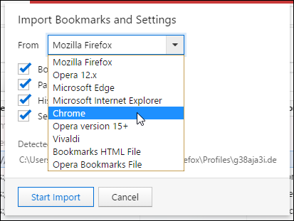
However, the best bookmarks feature in Vivaldi is bookmark nicknames. You can assign a nickname to each bookmark, which you can then type in the address bar to quickly load that webpage.
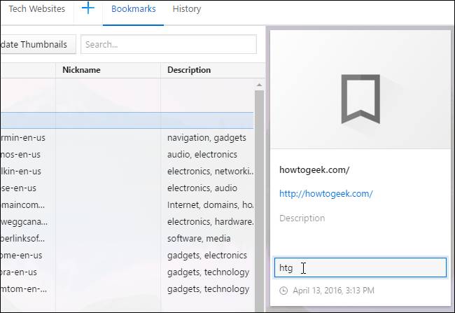
![]()
Most of this is pretty standard–Vivaldi’s bookmarks may open in a panel, rather than a new box or tab like Firefox and Chrome, but it’s not that mind-blowing of an improvement. The Keyword property for bookmarks in Firefox is similar to the bookmark nickname feature in Vivaldi as well. In Chrome, however, you’ll have to use a workaround to create keyword bookmarks.
“Dock” a Web Page to the Side with Web Panels
Web Panels allow you to display the mobile or desktop view or any webpage in a panel either on the left or right side of the browser window. Follow your social media accounts, read news, chat with your friends and family, all while browsing other sites separately in the main browser window. Note that this feature may not be as useful on smaller screens.
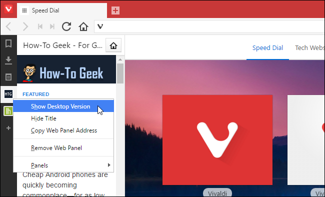
You can add a website to the web panel by clicking the plus sign on the panel toolbar on the left side of the browser window, or by right-clicking on a webpage and selecting “Add Page to Web Panel”.
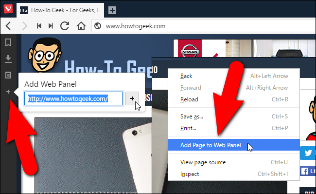
You can adjust the size of the panel by holding the mouse over the border between the panel and the main site window and dragging until the panel is the size you want.
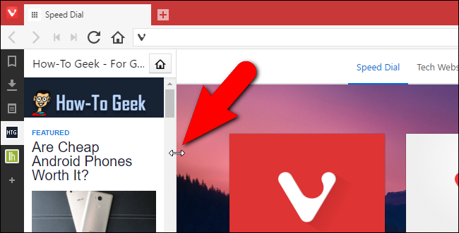
I couldn’t find any similar functionality to Vivaldi’s web panels in Firefox or Chrome, or any add-ons or extensions that would provide the web panels feature. If you know of a way to get something similar to web panels in Firefox or Chrome, let us know in the forum–otherwise, this is a pretty nice exclusive feature.
Manage Your Downloads
Just like Firefox and Chrome, you can access files you downloaded, remove downloaded files from the list (which does not delete the actual files), and clear the whole list. You can also retry or re-download any item in the list. There is nothing too special here.
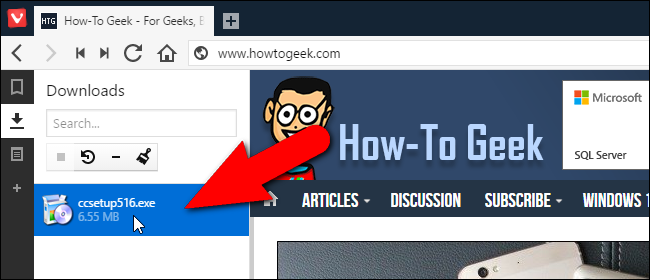
Make Notes from Any Web Page
In addition to viewing your bookmarks, downloads, and webpages in the side panel, you can also create and store notes there. Notes can contain selected portions of webpages or your own typed thoughts. Notes can even contain screenshots of webpages and attached files. You create a note from content on a webpage by selecting the content, right-clicking on it, and selecting “Add Selection as New Note” from the popup menu.
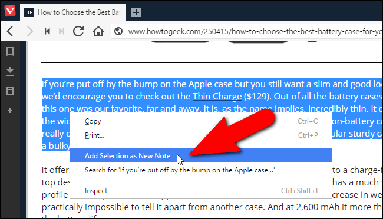
The note is added to the list of Notes in the side panel and includes the URL of the webpage so you can quickly return to that page.
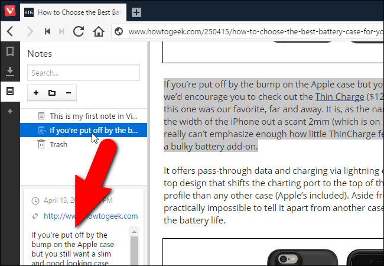
To create notes in Firefox, you’ll have to install an add-on, such as Notepad (QuickFox). In Chrome, you can install the Nimbus Notes extension to get the same functionality.
Stack Your Tabs to Reduce Clutter
I tend to open many tabs in a browser session, making it hard to find certain webpages I have open. The Quick Commands feature I mentioned earlier allows you to search through open tabs, so that can help you find webpages. However, Vivaldi also allows you to stack tabs, reducing the amount of separate tabs on the tab bar. Simply drag one tab over another until the text on the other tab turns gray.
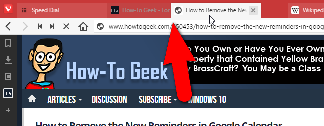
When you move your mouse over the stacked tabs, thumbnails of the webpages on those tabs display. Click on a thumbnail to go to that webpage.
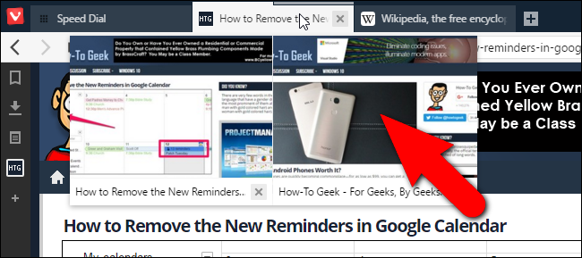
Firefox used to have a tab groups (Panorama) feature, which was similar to stacking tabs in Vivaldi, but it was removed as of version 45. However, you can use an extension, such as Tab Groups, to group your tabs in Firefox. In Chrome, as well, you’ll have to use an extension, such as Group Your Tabs. But Vivaldi’s solution is awfully slick.
View Two Pages at Once with Tab Tiling
You can also view two or more page at once in Vivaldi using the tab tiling feature. You can display stacked tabs or single tabs you select side by side or in a grid layout. For example, you could tile a stack of tabs by right-clicking on the tab stack and selecting “Tile Tab Stack” from the popup menu.
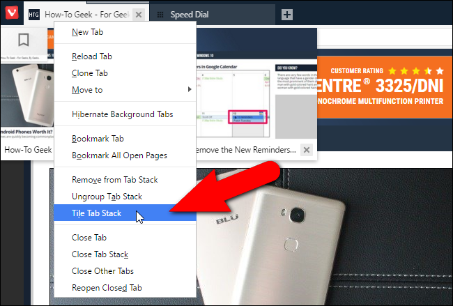
By default, the webpages from the tab group or that you selected are displayed side by side.
NOTE: You can select multiple tabs using the “Shift” and “Ctrl” keys while clicking on tabs, the same way you would select multiple files in File Explorer (or Windows Explorer).
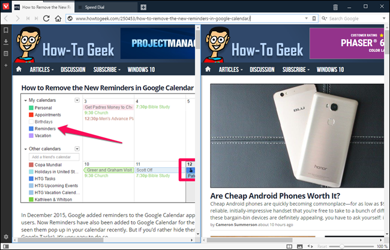
You can change the tiling pattern using the Page tiling button on the right side of the status bar at the bottom of the window.
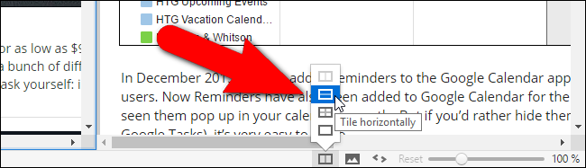
If you don’t have that may tabs open and you want to tile all of them, there are some useful shortcuts for doing that:
- Ctrl-F7 tiles all tabs to a grid
- Ctrl-F8 tiles all tabs horizontally
- Ctrl-F9 tiles all tabs vertically
To tile tabs in Firefox or Chrome, you need to install an extension, such as Tile Tabs, which is available for both browsers. Of course, you can also make them separate windows and use Windows’ built-in Aero Snap feature to do something similar.
Save Memory by Hibernating Background Tabs
Do you have so many tabs open that Vivaldi is starting to get sluggish? There’s an easy solution to that. The Tab Hibernation feature in Vivaldi unloads sites on non-active tabs, but keeps the tabs open in the browser. This frees up resources used by the browser.
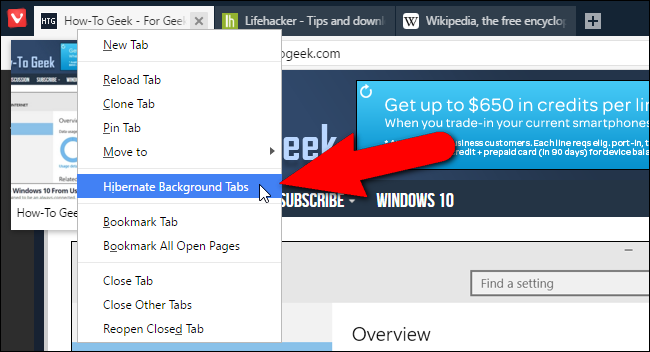
To put all your background tabs into hibernation, right-click on the active tab and select “Hibernate Background Tabs” from the popup menu. Your currently active tab stays active.
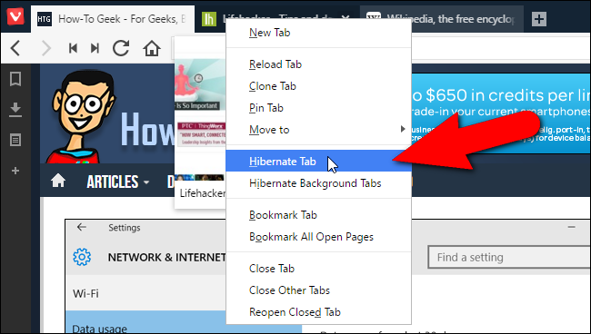
You can also hibernate individual tabs. To do this, right-click on the tab you want to hibernate and select “Hibernate Tab” from the popup menu.
Neither Firefox or Chrome seem to have a built-in tab hibernation feature, but you can install an add-on, such as UnlockTab in Firefox, or an extension, such as The Great Suspender, in Chrome, to accomplish the same thing.
View Thumbnail Previews of Open Tabs
Vivaldi offers a way to view a small version of the content of a tab (a thumbnail preview) without having to activate that tab. Simply move your mouse over the tab to see a thumbnail preview of the webpage on that tab. If you move your mouse over a set of stacked tabs, you’ll see thumbnail previews of all the webpages on those tabs.
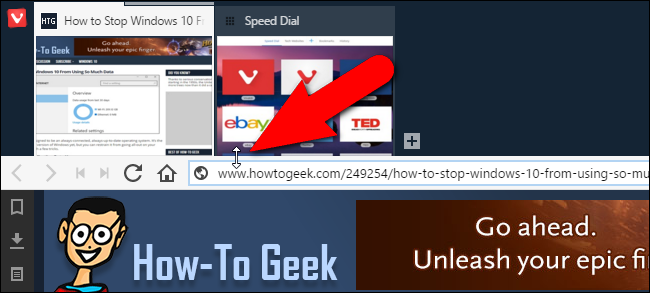
If you want a static view of all the thumbnail previews of your tabs, move your mouse over the top border of the address bar until the cursor becomes a two-way arrow. Then, click and drag down on that border until you see the thumbnail previews of all your tabs display.
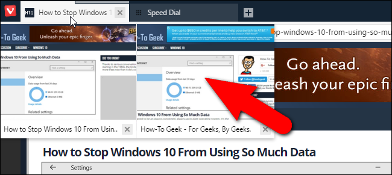
Manually Save Any Session for Later
The session management feature in Vivaldi allows you to easily save all your open tabs as a session that you can open at a later time, even after you close Vivaldi and reopen it. Simply select “Save Open Tabs as Session” from the “File” menu.
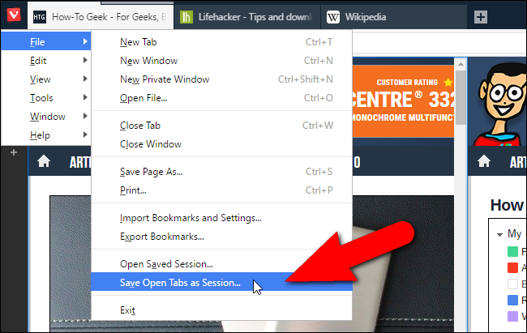
Firefox and Chrome can save your sessions automatically when you exit the browser, or open the browser on another computer. You can also save your session as a list of bookmarks, but it isn’t quite as dedicated a feature as it is in Vivaldi. Alternatively, in Chrome, you can install an extension, such as Session Buddy and in Firefox you can install an add-on, such as Session Manager.
Rewind and Fast Forward
You’re probably familiar with the Back and Forward buttons in your browser’s toolbar, but Vivaldi adds some useful Rewind and Fast Forward buttons as well, each with their own specific uses.
Rewind goes back to the first page you visited on that specific site. For example, say you arrived on a certain page on a site, maybe from a search. Then, you end up clicking link after link and now you want to get to the page you started on. In Vivaldi, simply click the “Rewind” button on the toolbar, and it’ll take you to the first page you visited on that domain.
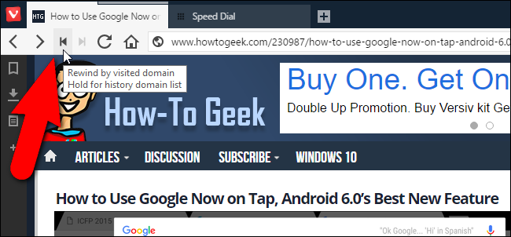
Fast Forward is a little different: for any site that has multiple pages, it’ll navigate to the next page, without you having to find the link. So, you could click it to go to the next page of Google search results, or the next page of articles on blogs like How-To Geek, No matter where you are on the current page, you can just click this button for all sites that support fast forward navigation.
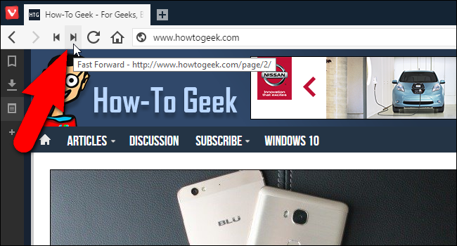
The Rewind and Fast Forward buttons can make navigation faster and more efficient. Neither Firefox or Chrome have these features and I did not find any add-ons or extensions that would fit the bill.
Add Any Site as a Custom Search Engine Instantly
Every browser has a search box, whether it be a separate one or one that’s integrated into the address bar. Most browsers also allow you to add multiple search engines and select a default one to use. However, Vivaldi makes this a little easier and more direct than Firefox and Chrome. You can add almost any search engine to the search box with just a right-click. For example, you can add How-To Geek as a search engine available on Vivaldi’s Search box. Simply, right-click in the Search box on the site you want to add as a search engine and select “Add as search engine” on the popup menu. That’s pretty convenient.
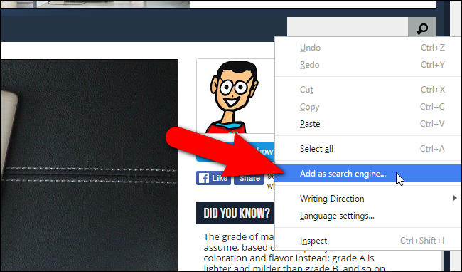
On the Add Search Engine dialog box, the URL for the site’s search engine is entered in the top edit box and the site’s URL displays in the edit box below that by default. However, you can replace that with a name for the site that will display on the list of search engines. You can also enter a nickname in the edit box bordered in blue on the image below. The nickname allows you to enter that followed by your search term in the address bar, in case you don’t want to change your current search engine at the time. For example, once I add How-To Geek to my list of search engines with a nickname of “htg”, I can enter something like “htg vivaldi” in the address bar to search for Vivaldi on How-To Geek.
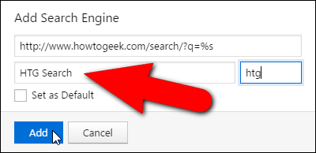
To change the search box to use How-To Geek as the search engine, click the magnifying glass button on the Search box and select “HTG Search” (or whatever you named it) from the drop-down list.
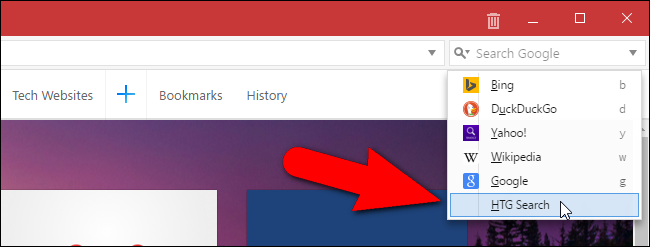
Again, both Chrome and Firefox have similar features, but they take a bit more legwork to get to. Having that option in a right-click menu is a pretty nice little addition.
Customize the Look and Feel of a Website with Page Actions
Page Actions in Vivaldi allow you to make websites easier to read or to just make them display to suit your preferences. Click the “<>” icon on the status bar in the lower-right corner of the browser window. Select the check boxes for the filters you want to apply to the current website. Selected page actions apply to the webpage you’re currently viewing. So, you can apply different filters to different websites in the same browsing session.
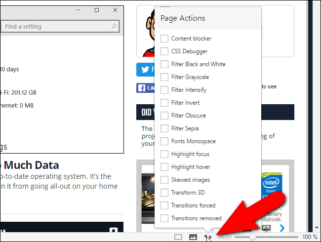
Customize the Interface
There are a couple of interesting customization features in Vivaldi I’d like to point out. The User Interface Zoom setting in Vivaldi allows you to change the size of the browser interface elements, such as the icons, buttons, etc., without affecting the page zoom.
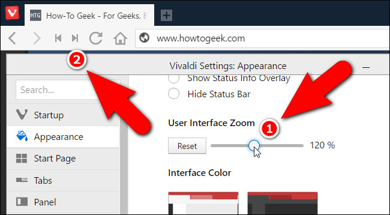
You can change the color of the interface in Vivaldi, but what’s more interesting is you can have Vivaldi change the color of the interface to match the theme of the webpage currently being viewed. Just turn on the Use Page Theme Color in User Interface appearance setting. This makes the browser sort of blend in like a chameleon and allows you to concentrate on the content of the webpages you view.
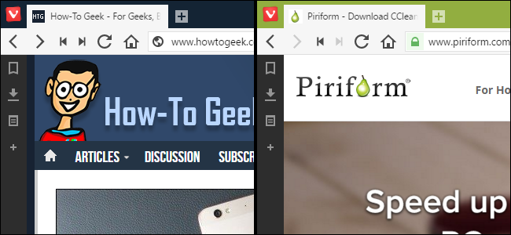
Vivaldi allows full customization of keyboard shortcuts you can set up in the settings to control the whole browser.
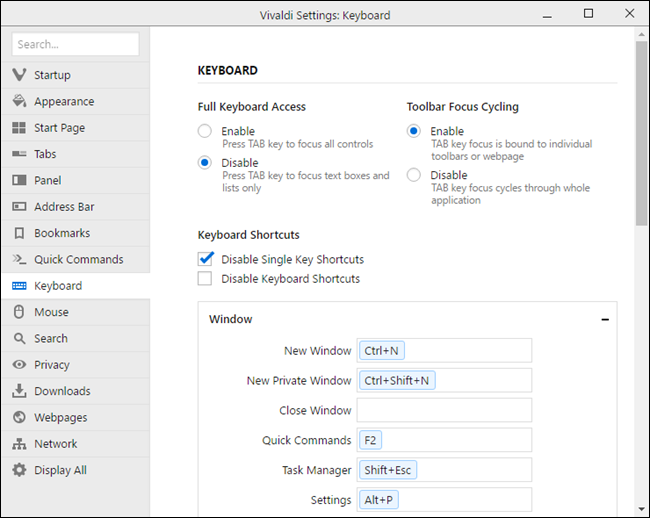
Expand Vivaldi’s Usefulness with Extensions
Vivaldi does support Chrome extensions, just like Opera and many other Chromium-based browsers. However, not all extensions will work well and some may not work in Vivaldi at all, such as the very popular LastPass password manager. To install Chrome extensions in Vivaldi, go to Chrome’s extensions page, select an extension, and install it just as you would in Chrome.
Don’t be surprised if an extension you install causes Vivaldi to crash, however. That happened when I installed the Save to Pocket extension. I clicked the Save to Pocket button on the toolbar and Vivaldi spontaneously closed. Hopefully this will improve as Vivaldi matures, but–despite it officially “supporting” Chrome extensions–it doesn’t have nearly the widespread support that Chrome does.
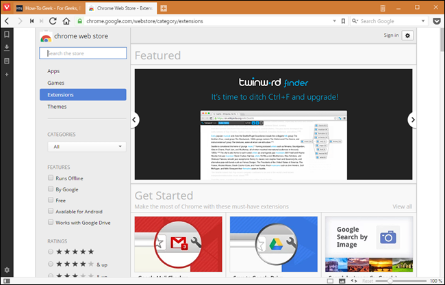
If you want to remove an extension that didn’t work correctly, you can manage extensions by entering “vivaldi://extensions” (without the quotes) in the address bar. You’ll see an extension manager on the current tab that looks suspiciously like Chrome’s extension manager. Simply click the trash can icon next to the extension you want to remove and the extension is removed from Vivaldi. You can also disable extensions you don’t want to use.
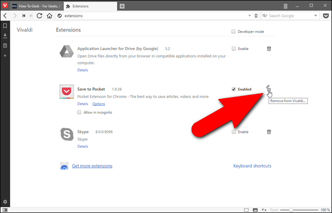
These are just some of the features available in Vivaldi. There are a lot more ways to customize the browser and make your browsing experience more efficient. For a newly installed browser, it did not open that quickly, but hopefully that will improve as they release updates. If you use many of the features, such as the panels and the tab tiling, the browser window can also get a bit too cluttered especially on smaller screens. However, you can enable and disable just about every feature in Vivaldi, so if you need to get a feature out of your way you can disable it, but be able to get it back later when you need it.
It has a lot of the same features as Chrome and Firefox, and most that it doesn’t have are available as extensions. Vivaldi’s main advantage is building those into the browser, and making them very easy and quick to use. It also has a lot of customization options (though probably not as many as Firefox, if you consider Firefox’s about:config abilities). However, Vivaldi’s support for extensions is still buggy. Even though Vivaldi has a lot of features and customizations, Chrome and Firefox’s extensions still provide access to a lot more, so it’s hard for Vivaldi to measure up to them in true power.
Overall, Vivaldi shows promise, even in its early stages, and I might just give it a spin for a while. But most power users won’t be giving up Firefox and Chrome just yet. Download Vivaldi, try it out, and let us know what you think.
- Published 04/15/16
![]()
![]()
![]()
![]()
![]()
![]()
![]()
![]()
![]()

This browser is sort of growing on me. I like a lot of these features.
@lkaufman Thanks for writing the detailed review and how-to for Vivaldi, Lori!
The browser looks nice, and certainly has a lot of customization facility. It will be interesting to see how it evolves.
I am a photographer and have two sites devoted to my work. I also visit a few photography-related sites. Do you have any information as to how Vivaldi handles color management, or which color profiles Vivaldi supports, such as Adobe RGB, sRGB, etc.?
Thanks!--P
I've been using Vivaldi as my default browser for well over a year and about three months ago removed the taskbar button for Opera 12.17 and have finally been able to uninstall FF, which I hated but sometimes needed when Opera hit problems with a website. Using the development snapshots makes things especially interesting. I'm a fairly run-of-the-mill kind of user and don't get up to complicated stuff, so that helps I suppose! Go to the Developers Team Blog for latest news and snapshots.I have no affiliation with Vivaldi other than as a user.
Great review! I really wanted to jump in with Vivaldi but "Lastpass is not supported" was the clinker. Maybe next revision!
Maybe next revision!
No 'Lastpass', no Vivaldi. Though I may download and play with it for a while.
It all sounded great and I was going to give it a go but, once I read that the Lastpass extension wouldn't work; I quit right there. Lastpass is a must for me.
Incredibly thorough article as always. Thanks Lori.
In Firefox, bookmarks can be opened in a sidebar. If you right-click on a bookmark and select properties, you will see a box that says Load this bookmark in the sidebar.
This is also available in Edge.
Something similar to the Fast Forward button is available through the PageZipper bookmarklet.http://www.printwhatyoulike.com/pagezipper
Unless I missed something, LastPass works perfectly with Vivaldi !
No reason to «switch» to Vivaldi, i e, to uninstall another browser and replace it with Vivaldi. Rather, just add Vivaldi to one's browser palette, and choose the browser that is most appropriate for the task to be performed....
But thanks to Lori Kaufman for this detailed introduction to Vivaldi's many features !...
Henri
It may be very good but I have twice downloaded it and installed it but it would not open for me! I have posed the problem on their forum and the only remedy suggested is to download it with Opera 12 or something else, neither of which I have.
Thanks, Lori. Did you talk about Vivaldi memory footprint? If so, I missed it.
Memory use has become a limiting factor for browsers on my trusty iMac desktop bought in 2009, which maxes 4GB RAM. While there may be a better way to cope, lately I limit myself to Firefox, which seems to perform better under my typical load of 20-30 tabs.
Why Ooo why does nobody check the best browser out there = Avant Browser !!?? I have checked them all out and nobody can win from AB with the FireFox engine and Crystal skin. I love Vivaldi when I'm setting it up but why the hell Chrome? I hate Chrome because you can not delete history etc. on shutting the browser down and that is one big thing for me and also when I type the site: bovendien.com it takes Vilvaldi more then 12 seconds to fully load it and with AB +FF engine it takes me +-6 seconds to fully load it and I have checked them all for speed but all are slower then FF here. Oke, I have tweaked FF here but you have all the options and more with Avant Browser and you have three engines in one browser: FF, Explorer and even Chrome but Chrome I delete every time because I use the most of the time FF and I have noticed the Chome collects data, even when I'm browsing with FF.
But I must also say that Vivaldi does a good job with the features and there are some that are interesting and AB does not have but so long the speed is not there and you cannot delete the things automatic that you would like then it is a no go for me.
this is my preview of AB with FF + Crystal skin
Look simple but let it not fool you because the options behind it are great and one of the best in my mind but Vivaldi has potential after a few adjustments but I do not think that they are coming. The best thing that I see is to take an example like AB and take all the options that are not in V. and make sure that the speed is the same and with all the options for cleaning the browser on shutdown and we have a winner
Lastpass works (so far) without a hitch! I like
Lastpass is supported as of the Vivaldi 1.0 release. Works fine for me